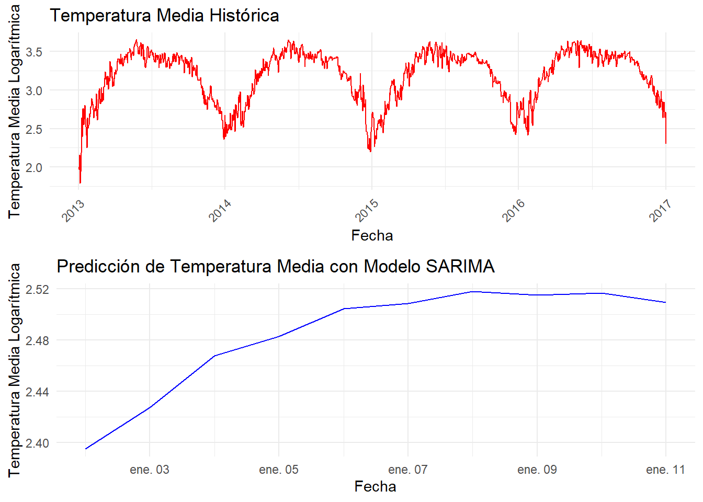

Chapter 6 Modulo 2 - Unidad 2
- Inclusión de Variables en el Tiempo
library(lubridate) # para manejo de fechas
# Convertir la columna de fecha a tipo Date si no está convertida
data$date <- as.Date(data$date)
# Crear nuevas variables de tiempo
data$year <- year(data$date)
data$month <- month(data$date)
data$day <- day(data$date)
data$day_of_week <- wday(data$date, label = TRUE) # Días de la semana con etiquetas6.1 Modelos de Series de Tiempo: Definiciones y Aplicaciones
Modelo Autorregresivo (AR): Un modelo AR utiliza dependencias entre observaciones sucesivas para predecir valores futuros basándose únicamente en los valores pasados. Se denota como AR(p), donde ‘p’ es el número de observaciones pasadas (lags) utilizadas como predictores.
Modelo de Media Móvil (MA): En un modelo MA, la predicción se realiza sobre la base de los errores de predicción pasados, no directamente sobre los valores. Se expresa como MA(q), donde ‘q’ es el número de errores pasados que el modelo toma en cuenta.
Modelo ARIMA (AutoRegressive Integrated Moving Average): Combinando AR y MA, este modelo también incorpora un término de diferenciación (d) para convertir la serie en estacionaria, esencial para cumplir con los supuestos de los modelos lineales de series de tiempo. Se denota como ARIMA(p, d, q).
Modelo ARIMA Estacional: Extiende el ARIMA para capturar estacionalidades. Se denota como ARIMA(p, d, q)(P, D, Q)[s], donde P, D, y Q representan la autoregresión estacional, la diferenciación estacional, y la media móvil estacional, respectivamente, con ‘s’ indicando la periodicidad de la temporada.
Ajuste de Modelos de Series de Tiempo en R
# Cargar las librerías necesarias
library(tseries)
library(forecast)
library(ggplot2)
library(lubridate)
# Cargar el dataset
ruta <- "C:/Users/Diego Ortiz/OneDrive/Documentos/Series de tiempo/Series1/ST1/DailyDelhiClimateTrain.csv"
data <- read.csv(ruta)
# Ajuste del formato de la fecha
data$date <- as.Date(data$date)
data$day_of_week <- wday(data$date, label = TRUE)
# Crear nuevas variables temporales
data$year <- year(data$date)
data$month <- month(data$date)
data$day <- day(data$date)
# Análisis de Estacionariedad y Transformaciones
# Verificación inicial de estacionariedad
adf_result_original <- adf.test(data$meantemp, alternative = "stationary")
print(adf_result_original)##
## Augmented Dickey-Fuller Test
##
## data: data$meantemp
## Dickey-Fuller = -1.8526, Lag order = 11, p-value = 0.6407
## alternative hypothesis: stationary- Estadístico de Dickey-Fuller: -1.8526
Este valor es el estadístico de la prueba de Dickey-Fuller. Valores más negativos indican una mayor evidencia contra la hipótesis nula de no estacionariedad.
- Orden de Rezago: 11
Indica el número de retardos utilizados en la prueba. Un valor de 11 sugiere que la prueba tomó en cuenta 11 términos de rezago para corregir la autocorrelación en la serie.
- **+*p-valor: 0.6407**
El p-valor asociado con esta prueba es 0.6407. Un p-valor alto (mayor que 0.05) indica que no podemos rechazar la hipótesis nula de que la serie tiene una raíz unitaria (es decir, la serie no es estacionaria).
Con base en los resultados de la prueba ADF, podemos concluir que la serie de temperatura media no es estacionaria, ya que el p-valor es significativamente mayor que 0.05. Esto implica que hay una tendencia o patrones cíclicos en la serie que deben ser tratados antes de proceder con el modelado de series temporales.
6.2 Tranformación y Diferenciación
# Transformación logarítmica
data$meantemp_log <- log(data$meantemp)
# Diferenciación de la serie transformada
data$meantemp_diff <- c(NA, diff(data$meantemp_log)) # Agrega NA al inicio para mantener la longitud
# Reevaluar estacionariedad con la serie diferenciada
adf_result_diff <- adf.test(na.omit(data$meantemp_diff), alternative = "stationary")## Warning in adf.test(na.omit(data$meantemp_diff), alternative = "stationary"):
## p-value smaller than printed p-value##
## Augmented Dickey-Fuller Test
##
## data: na.omit(data$meantemp_diff)
## Dickey-Fuller = -13.915, Lag order = 11, p-value = 0.01
## alternative hypothesis: stationary** Interpretación de los Resultados**
- Estadístico de Dickey-Fuller: -13.915
Este valor es mucho más negativo en comparación con el valor original de -1.8526, lo que sugiere una fuerte evidencia en contra de la hipótesis nula de no estacionariedad.
- Orden de Rezago: 11
Al igual que en la prueba anterior, este valor indica el número de términos de rezago utilizados en la prueba para corregir la autocorrelación.
- p-valor: 0.01
El p-valor asociado es 0.01, lo que es significativamente menor que 0.05. Esto nos permite rechazar la hipótesis nula de no estacionariedad con un nivel de confianza del 99%. Conclusión
Con base en estos resultados, podemos concluir que la serie diferenciada y transformada de la temperatura media es estacionaria, podemos proceder con el ajuste de un modelo de series temporales.
6.3 Ajuste del Modelo Lineal Estacionario
# Remover NA creado por la diferenciación
data <- na.omit(data)
# Modelo lineal utilizando variables temporales y la serie transformada y diferenciada
model <- lm(meantemp_diff ~ year + month + day_of_week, data = data)
# Revisar el resumen del modelo
summary(model)##
## Call:
## lm(formula = meantemp_diff ~ year + month + day_of_week, data = data)
##
## Residuals:
## Min 1Q Median 3Q Max
## -0.40903 -0.03496 0.00410 0.03966 0.44474
##
## Coefficients:
## Estimate Std. Error t value Pr(>|t|)
## (Intercept) 1.5627646 3.5452077 0.441 0.65942
## year -0.0007708 0.0017598 -0.438 0.66144
## month -0.0015183 0.0005713 -2.658 0.00796 **
## day_of_week.L -0.0056606 0.0052113 -1.086 0.27757
## day_of_week.Q -0.0083401 0.0052105 -1.601 0.10968
## day_of_week.C 0.0083180 0.0052134 1.595 0.11082
## day_of_week^4 -0.0055981 0.0052131 -1.074 0.28307
## day_of_week^5 0.0017441 0.0052152 0.334 0.73811
## day_of_week^6 -0.0039548 0.0052126 -0.759 0.44816
## ---
## Signif. codes: 0 '***' 0.001 '**' 0.01 '*' 0.05 '.' 0.1 ' ' 1
##
## Residual standard error: 0.07531 on 1452 degrees of freedom
## Multiple R-squared: 0.0104, Adjusted R-squared: 0.004946
## F-statistic: 1.907 on 8 and 1452 DF, p-value: 0.05521Análisis de los Resultados:
Coeficientes:
- Intercepto: No es significativo con un valor p de 0.65942.
- Año (year): No es significativo con un valor p de 0.66144.
- Mes (month): Significativo con un valor p de 0.00796. Esto sugiere que la diferencia logarítmica de la temperatura media tiene una relación significativa con el mes del año.
- Día de la Semana (day_of_week): Ninguno de los componentes del polinomio ortogonal es significativo individualmente.
Errores Residuales:
- Residual estándar: 0.07531
- Mínimo: -0.40903
- 1er Cuartil: -0.03496
- Mediana: 0.00410
- 3er Cuartil: 0.03966
- Máximo: 0.44474
Estadísticas del Modelo:
R-cuadrado múltiple: 0.0104, lo que indica que solo el 1.04% de la variabilidad en la diferencia logarítmica de la temperatura media es explicada por el modelo.
R-cuadrado ajustado: 0.004946, que es ligeramente inferior al R-cuadrado múltiple.
F-estadístico: 1.907 con un valor p de 0.05521, lo que sugiere que el modelo en su conjunto no es significativo al nivel del 5%, pero está cerca de serlo.
Mes: Es la única variable que parece tener un efecto significativo en la diferencia logarítmica de la temperatura media.
Ajuste del Modelo: El modelo actual explica muy poca variabilidad en la serie temporal de la temperatura media (1.04%). Esto puede indicar que hay otros factores no incluidos en el modelo que son importantes.
Prueba de Normalidad: Realizar la prueba de normalidad de los residuos para verificar su distribución.
Análisis de Residuos: Examinar los residuos del modelo para verificar la adecuación del modelo.
6.4 Diagnóstico del Modelo
Gráfico de Residuos:
# Diagnóstico del Modelo
# Verificar los residuos del modelo
# Gráfico de residuos
ggplot(data, aes(x = date, y = residuals(model))) +
geom_line() +
labs(title = "Residuos del Modelo de Temperatura", y = "Residuos", x = "Fecha")
El gráfico de residuos muestra las diferencias entre los valores predichos por el modelo y los valores observados en la serie temporal de la temperatura media. Observaciones clave:
Comportamiento de los Residuos:
Los residuos parecen tener una media alrededor de cero, lo cual es bueno y esperado.
Sin embargo, la variabilidad de los residuos no es constante a lo largo del tiempo. Este fenómeno, conocido como heterocedasticidad, puede indicar que el modelo no captura completamente la estructura de los datos.
Patrones en los Residuos:
Algunos períodos muestran residuos más grandes, especialmente al inicio y en ciertos picos alrededor de los años 2014 y 2015. Esto puede sugerir que hay factores adicionales no considerados en el modelo que afectan la temperatura en estos períodos.
Prueba de normalidad de los residuos
##
## Shapiro-Wilk normality test
##
## data: residuals(model)
## W = 0.94823, p-value < 2.2e-16Resultados:
- W = 0.94823: Este es el estadístico de la prueba de Shapiro-Wilk. Un valor cercano a 1 indica que los datos son aproximadamente normales, mientras que valores menores sugieren desviaciones de la normalidad.
- p-value < 2.2e-16: El p-valor es extremadamente pequeño, significativamente menor que cualquier nivel típico de significancia
6.5 Previsión Futura
# Previsión Futura
# Generar un nuevo conjunto de datos para las predicciones futuras
future_dates <- seq(max(data$date) + 1, by = "day", length.out = 10)
new_data <- data.frame(
date = future_dates,
day_of_week = factor(wday(future_dates, label = TRUE)),
meantemp_diff = NA, # Placeholder, no se usa en el modelo de predicción
year = year(future_dates),
month = month(future_dates)
)
# Predecir usando el modelo ajustado
prediction <- predict(model, newdata = new_data)
# Visualizar las predicciones
plot(future_dates, prediction, type = "l", col = "blue", xlab = "Date", ylab = "Predicted Mean Temperature",
main = "Forecast of Mean Temperature")
lines(data$date, data$meantemp, col = "red") # Añadir los datos originales para comparar
- Tendencia General:
La predicción muestra una variabilidad en la temperatura media para los próximos 10 días. Se observa un descenso inicial en la temperatura, seguido de un aumento significativo hacia el final del período de predicción.
- Amplitud de Predicción:
La amplitud de la predicción varía considerablemente, lo que podría sugerir una alta volatilidad en los datos predichos.
6.6 SARIMA
Dados los resultados aplicaremos SARIMA
# Cargar las librerías necesarias
library(forecast)
library(ggplot2)
# Ajuste del modelo SARIMA utilizando auto.arima para identificar el mejor modelo
sarima_model <- auto.arima(data$meantemp_log, seasonal = TRUE)
# Resumen del modelo ajustado
summary(sarima_model)## Series: data$meantemp_log
## ARIMA(4,1,3)
##
## Coefficients:
## ar1 ar2 ar3 ar4 ma1 ma2 ma3
## 0.8769 0.7915 -0.6421 -0.0343 -1.1071 -0.6607 0.7774
## s.e. 0.2053 0.3397 0.1037 0.0481 0.2017 0.3962 0.1968
##
## sigma^2 = 0.005239: log likelihood = 1765.01
## AIC=-3514.01 AICc=-3513.91 BIC=-3471.72
##
## Training set error measures:
## ME RMSE MAE MPE MAPE MASE
## Training set -0.0002524643 0.07218522 0.05126881 -0.03729558 1.693835 0.9666712
## ACF1
## Training set 0.0004433112##
## Ljung-Box test
##
## data: Residuals from ARIMA(4,1,3)
## Q* = 5.2164, df = 3, p-value = 0.1566
##
## Model df: 7. Total lags used: 10El gráfico muestra los residuos del modelo ARIMA ajustado, indicando que el modelo ARIMA(4,1,3) fue seleccionado como el mejor ajuste para la serie temporal
Residuos del Modelo El gráfico de los residuos muestra que, en general, los residuos parecen ser ruido blanco, lo cual es una buena indicación de que el modelo está capturando bien las estructuras en los datos. Sin embargo, algunos picos en los residuos sugieren que podría haber eventos extremos o outliers no capturados por el modelo.
Prueba de Ljung-Box La prueba de Ljung-Box se utiliza para verificar la autocorrelación en los residuos del modelo de series temporales. En este caso, el p-valor de 0.1566 indica que no podemos rechazar la hipótesis nula de que los residuos no están correlacionados.
# Predicción futura con el modelo SARIMA
sarima_forecast <- forecast(sarima_model, h = 10) # Predice los próximos 10 días
# Crear un data frame para las fechas futuras
future_dates <- seq(max(data$date) + 1, by = "day", length.out = 10)
future_data <- data.frame(date = future_dates, meantemp_log = sarima_forecast$mean)
# Gráfico de los datos históricos
p1 <- ggplot(data, aes(x = date, y = meantemp_log)) +
geom_line(color = "red") +
labs(title = "Temperatura Media Histórica",
x = "Fecha", y = "Temperatura Media Logarítmica") +
theme_minimal() +
scale_x_date(date_labels = "%Y", date_breaks = "1 year") +
theme(axis.text.x = element_text(angle = 45, hjust = 1))
# Gráfico de las predicciones futuras
p2 <- ggplot(future_data, aes(x = date, y = meantemp_log)) +
geom_line(color = "blue") +
labs(title = "Predicción de Temperatura Media con Modelo SARIMA",
x = "Fecha", y = "Temperatura Media Logarítmica") +
theme_minimal()
# Mostrar ambos gráficos
library(gridExtra)
grid.arrange(p1, p2, ncol = 1)
Históricos:
El gráfico superior muestra las temperaturas medias logarítmicas históricas con una estacionalidad clara. Los picos y valles anuales son evidentes.
Predicciones Futura:
El gráfico inferior muestra la predicción futura para los próximos 10 días, con un aumento gradual y una estabilización.